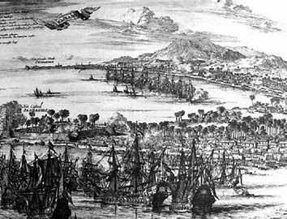
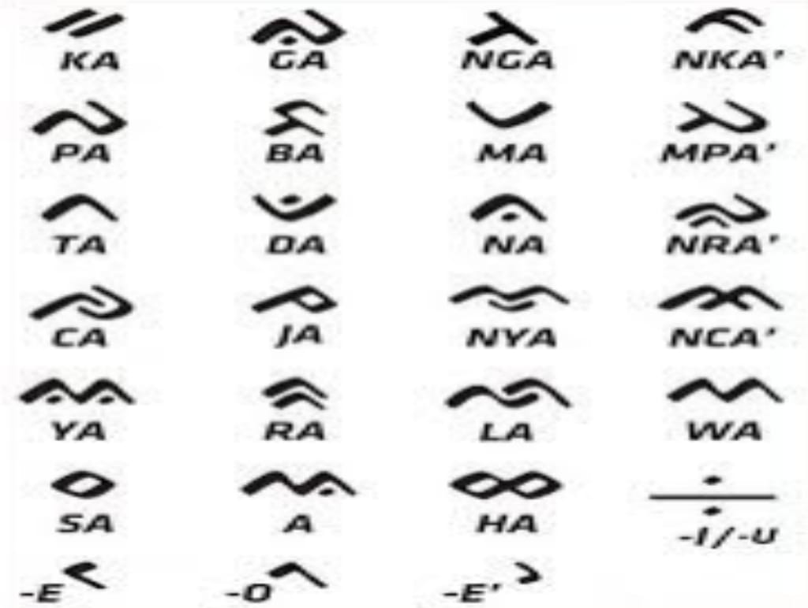
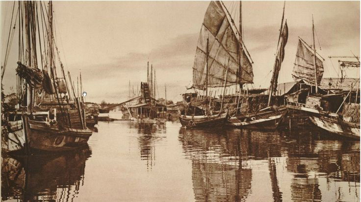
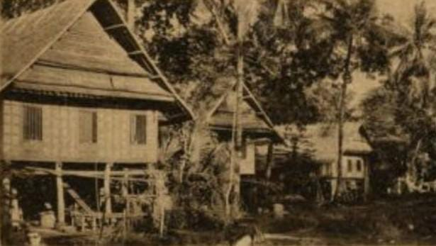
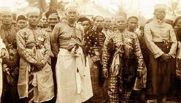

Suku Bugis salah satu suku bangsa yang menghuni Pulau Sulawesi,
sekaligus menjadi sebagai salah satu suku terbesar yang mendiami
wilayah Sulawesi Selatan.
Tentang Bugis
Suku bugis adalah salah satu suku yang berasal dari Sulawesi
Selatan. Di Sulawesi Selatan, Suku Bugis mendiami wilayah Kabupaten
Bone, Soppeng, Wajo, Sidrap, Pinrang, Pare-pare, Barru, Sinjai
hingga Bulukumba. Selain itu, orang Bugis juga tersebar hampir di
seluruh Nusantara, bahkan hingga Mancanegara.
Edward Ridwan 23 September 2022

Sejarah dan Asal Usul Bugis
Melansir dari situs resmi Pemerintah Kabupaten Wajo, sejarah nenek
moyang suku Bugis berasal dari Etnis Deutro Melayu (Melayu muda).
Yaitu Bangsa Austronesia dari Yunan (China Selatan) yang datang ke
Nusantara sekitar tahun 500 SM.Nama Suku Bugis sendiri berasal dari
kata to Ugi (diterjemahkan sebagai orang Bugis).
Edward Ridwan 23 September 2022

Bahasa dan Aksara Suku Bugis
Suku Bugis memiliki aksara khusus yang disebut dengan aksara
lontara. Pada zaman dahulu, naskah-naskah lontara yang berisi
nasihat atau mantra-mantra ditulis di atas daun lontar. Oleh karena
itu pada suku bugis aksara tersebut disebut dengan aksara lontara.
Edward Ridwan 23 September 2022

Kisah Perantauan Suku Bugis
Orang Bugis pada awalnya hanya berdomosili di daratan Sulawesi.
Dalam perkembangannya, sebagai orang Bugis merantau ke berbagai
wilayah dan negara. Mengutip Jurnal Universitas Hasanuddin Makassar
yang berjudul "Budaya Bugis dan persebarannya dalam Perspektif
Antropologi Budaya", orang Bugis merantau dengan berbagai
pertimbangan. Salah satunya adalah untuk meninggalkan rajanya yang
sewenang-wenang.
Edward Ridwan 23 September 2022

Rumah Adat Suku Bugis
Rumah adat Suku Bugis, yang disebut Bola, merupakan salah satu ciri
khas arsitektur tradisional mereka. Rumah ini dibangun dengan
struktur panggung yang tinggi, biasanya mencapai 2-3 meter di atas
tanah. Tujuan pembangunan rumah panggung adalah untuk menghindari
banjir, serangan binatang buas, dan sebagai simbol status sosial.
rumah adat suku Bugis dibedakan menjadi 2 jenis tergantung pada
status sosial penghuninya, yaitu Saoraja dan Bola.
Zhian Hibrizi 21 Februari 2025

Budaya Suku Bugis
Budaya Suku Bugis sangat kaya dan beragam, mencakup seni, tradisi,
dan adat istiadat yang masih dilestarikan hingga saat ini. Beberapa
aspek budaya yang menonjol antara lain: Tari Tradisional: Tari
Pajoge dan Tari Paduppa adalah contoh tarian tradisional Bugis yang
sering dipentaskan dalam acara adat. Musik Tradisional: Alat musik
seperti gendang, kecapi, dan suling sering digunakan dalam
pertunjukan musik tradisional.